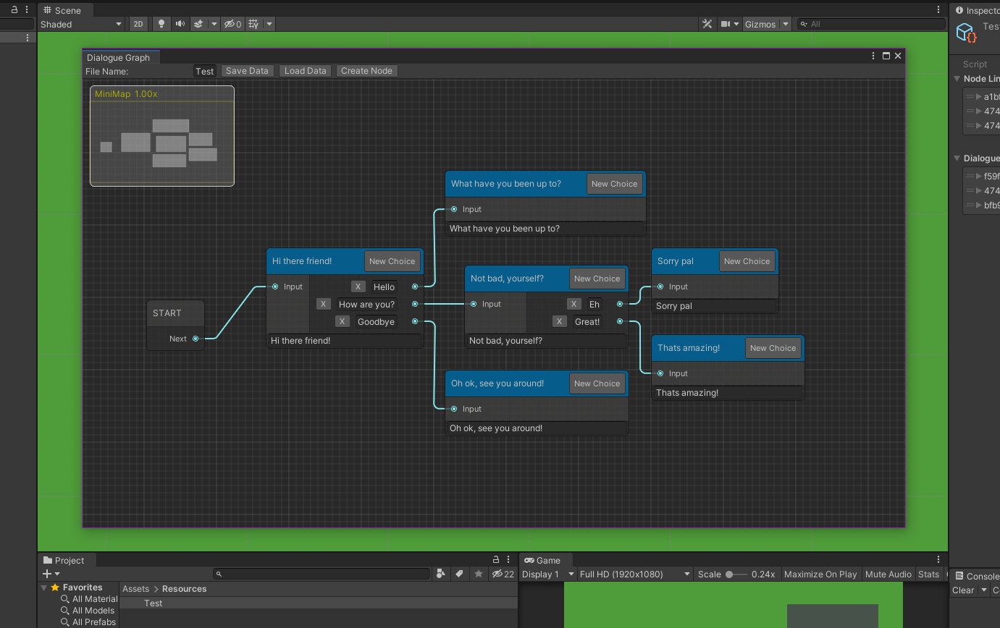
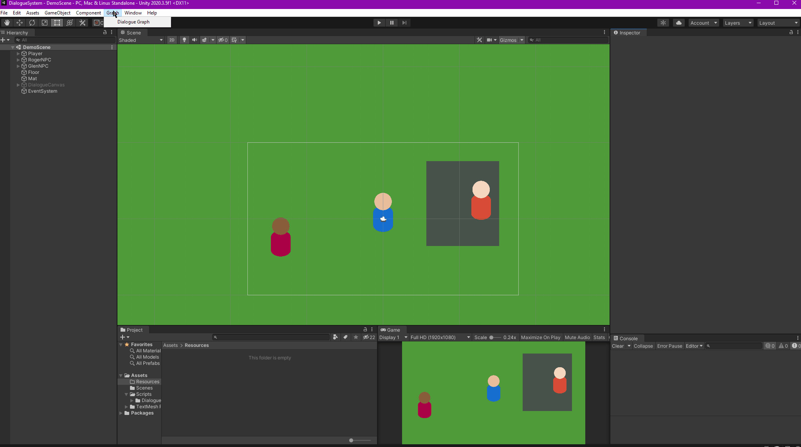

Dialogue Tree Tool
After playing around with Unity's custom editor system I was drawn to creating a node-based dialogue tool to easily implement any sort of dialogue in games. Although it hasn't been connected to any scripts yet to play dialogue, it can currently load and save branching dialogue trees. This is still a work in progress.
Features
The tool can currently create a graph-view window in which to build your branching dialogue in, save and load dialogue trees and allow for branching choices or dialogue from editable text fields. This is still in it's early stages but I plan on adding custom properties/variables that can be changed, more node types and connections with Unity's event system or user's own custom ones.
